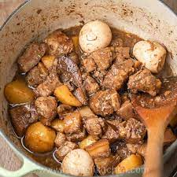

Adobo

Adobo from another galaxy
When people eat adobo from this recipe they fucking die.
Its so good you turn into an alien.
Ingrediants
- 2 tablespoons vegetable oil
- 1 chicken, cut into pieces
- 1 large onion
- 2 tablespoons minced garlic
- 2/3 cup low sodium soy sauce
Instructions
- Head the vegetable oil
- Cook the chicken until its brown
- Add in the onion, garlic, and soy sauce
- Cook for 40 minutes
Return to top
Return to main page